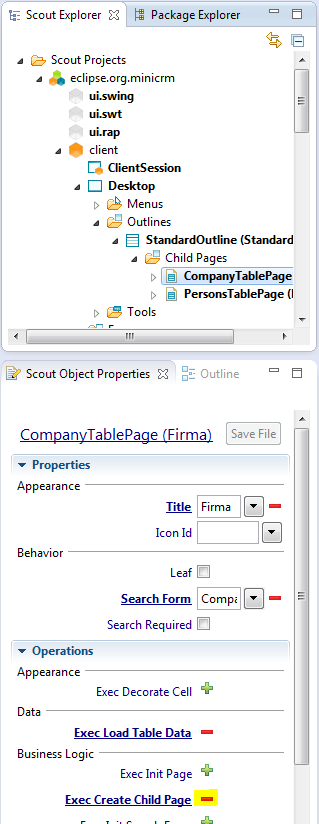
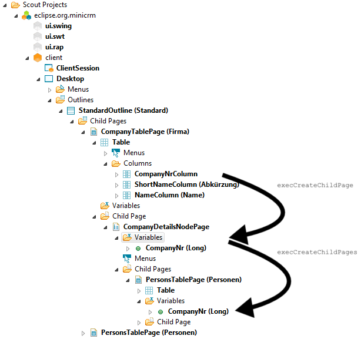

| Reorganize the tree | ||
|---|---|---|
| | |
| Write the second page | Code Types | |
We started out with an application having two table pages. Notice how the list of persons comes just beneath the list of companies.
If we need to add several folders of different types under each company (e.g. persons, activities, offers), we need to insert a page with nodes (called CompanyDetailsNodePage in the diagram below) inbetween the CompanyTablePage and the PersonTablePage.
| ⇒ |
In a first step, we need to remove PersonTablePage as a child of the CompanyTablePage.
Standard Outline
│ ├─Company Table Page │ │ │ └─Person Table Page ← wrong for the purpose of this tutorial! │ └─Person Table Page
Return to the CompanyTablePage and click on the red minus (-) next to Exec Create Child Page in order to delete it.

The result:
Standard Outline │ ├─Company Table Page │ └─Person Table Page
Once you have deleted the method, you can right-click on the Child Page folder and pick New Page...
Use AbstractPageWithNodes as your template. There's no need to give it a name. Use CompanyDetailsNodePage as the type name.
Standard Outline │ ├─Company Table Page │ │ │ └─Company Details Node Page ← new │ └─Person Table Page
Now go to the newly created CompanyDetailsNodePage, click through to the Child Pages folder, right-click and pick Add Existing Page... Pick the PersonTablePage from the list and click Finish.
Standard Outline │ ├─Company Table Page │ │ │ └─Company Details Node Page │ │ │ └─Person Table Page ← back again │ └─Person Table Page
If you attempt to test your application, you'll notice a problem: Every person is listed under every company!
Why is that?
We interrupted "the flow of data": When the user picks a company from the CompanyTablePage, the appropriate child page is created. When we created our second page, we made sure to pass the value of the CompanyNrColumn along. The newly introduced CompanyDetailsNodePage needs to be fixed!

Return to the CompanyDetailsNodePage and click through to Variables. Pick Create New Property Bean... from the context menu, use companyNr as the name and Long as the bean type.
Click on the Exec Create Child Pages link on the Properties view of the CompanyDetailsNodePage. Change the code as follows:
@Override
protected void execCreateChildPages(Collection<IPage> pageList) throws ProcessingException {
PersonTablePage personTablePage = new PersonTablePage();
personTablePage.setCompanyNr(getCompanyNr());
pageList.add(personTablePage);
}
Return to the CompanyTablePage and click on the Exec Create Child Page link on the Properties view. Change the code as follows:
@Override
protected IPage execCreateChildPage(ITableRow row) throws ProcessingException {
CompanyDetailsNodePage childPage=new CompanyDetailsNodePage();
childPage.setCompanyNr(getTable().getCompanyNrColumn().getValue(row));
return childPage;
}
We reached our goal! This is the new structure, and it works as intended.
Standard Outline │ ├─Company Table Page │ │ │ └─Company Details Node Page │ │ │ └─Person Table Page │ └─Person Table Page
Let's review how the data flows back and forth:
|  | |
| Write the second page | Code Types |